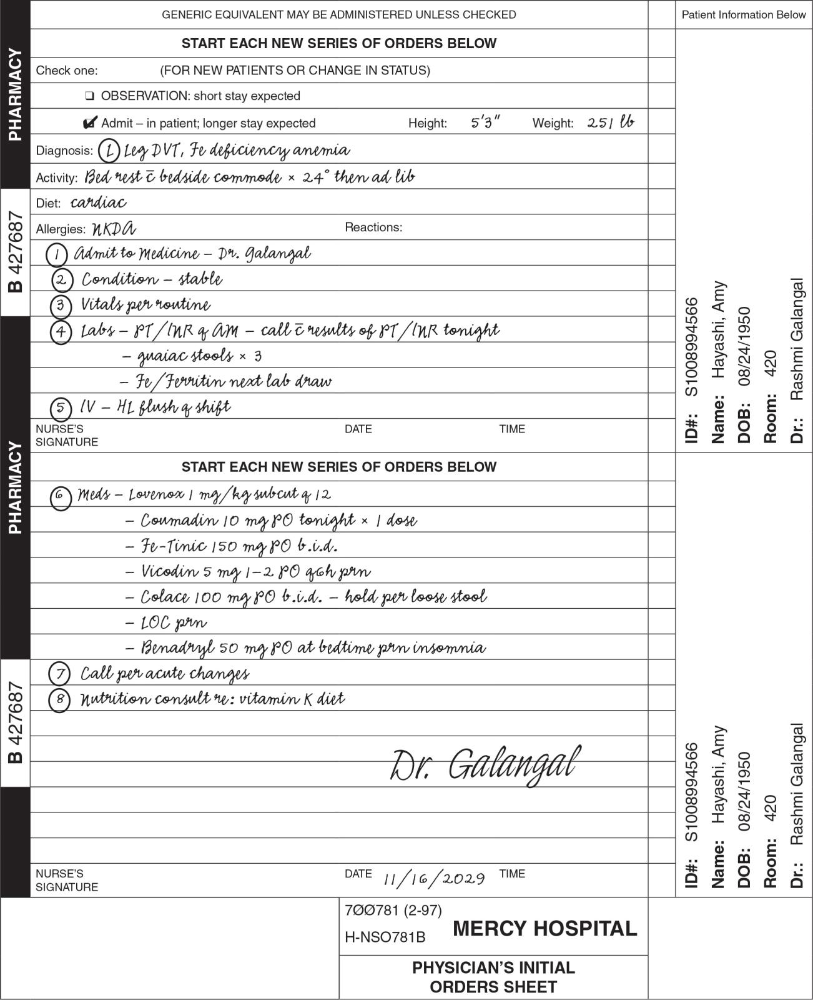
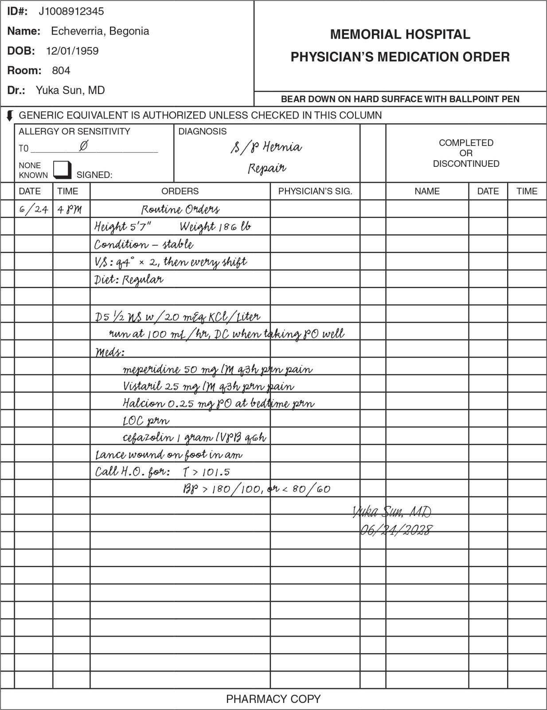
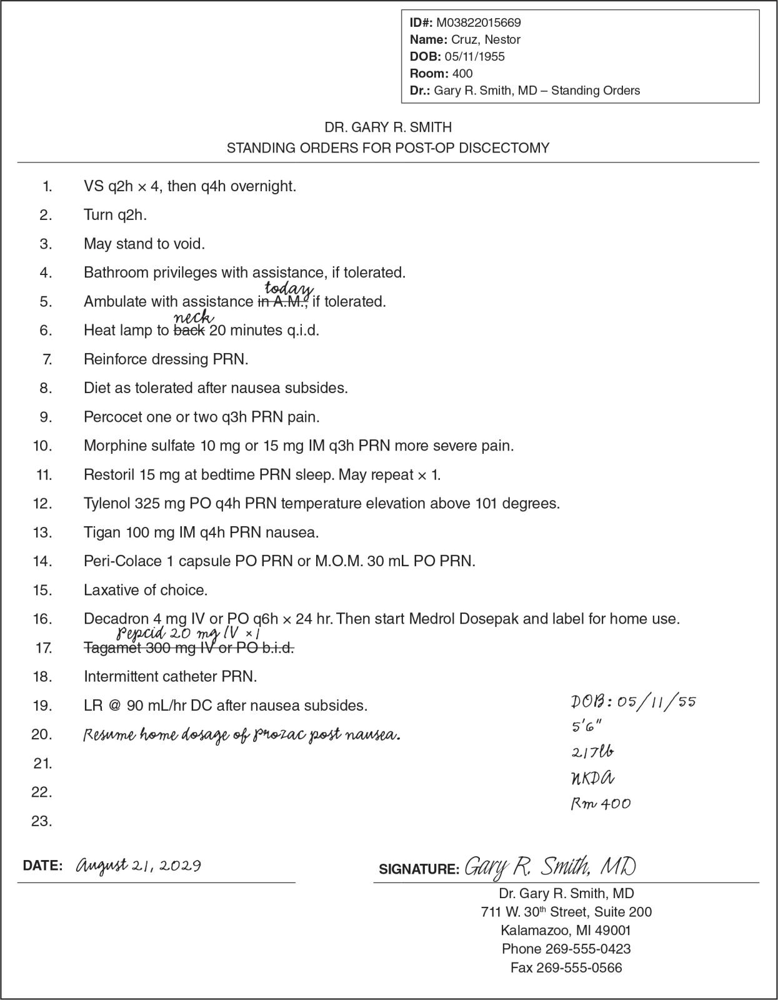
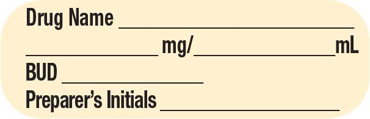
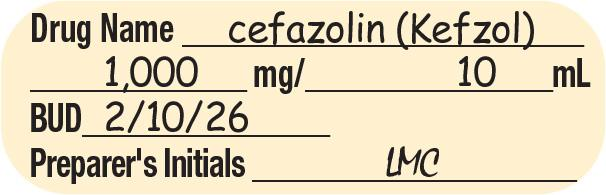
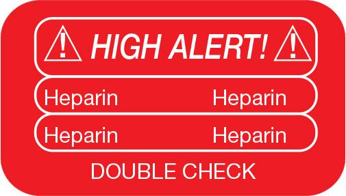
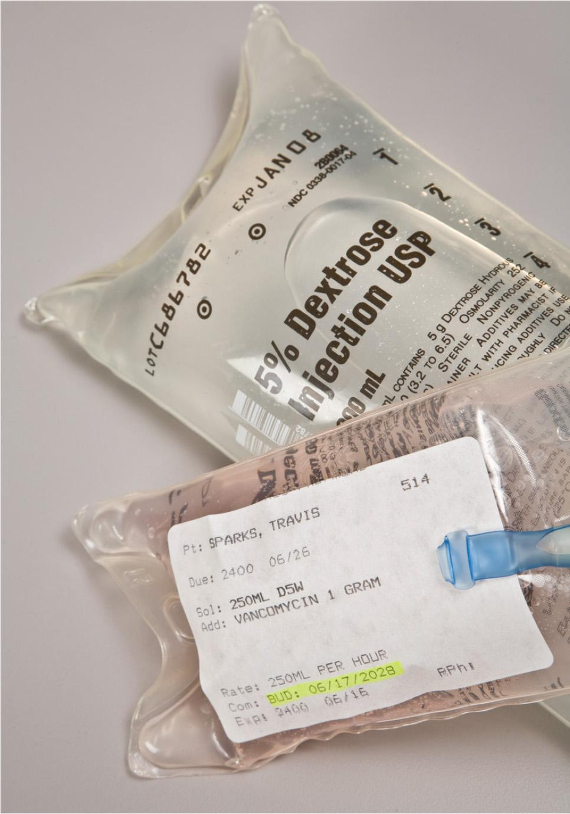

PART 2: TRAINING
6.4 Examine the Resources and Supplies
A close examination of the types and components of medical charts, medication orders, and CSP labels provides sterile compounding personnel with the understanding they need to confidently and accurately perform the initial steps of the sterile compounding process. In addition, a familiarity with the various auxiliary labels and their meanings is critical to the accurate labeling of sterile preparations by personnel.
Medical Chart
A patient’s medical chart—commonly referred to as the medical record, patient’s chart, or, simply, the chart—documents a patient’s medical history and all care and services provided to a patient. This record may be maintained in a paper format or, more commonly, an electronic format. A computerized patient chart is known as an electronic medical record (EMR). Inpatient facilities that depend on an EMR system provide computer terminals at nursing station or near patients’ rooms for convenient record keeping.
An EMR is most often associated with hospital or inpatient medical treatment. However, electronic health records (EHRs) are becoming widely used across all areas of health care. An EHR refers to a compilation of all healthcare information for a patient—including health history, medications, and treatment records—and may be utilized by a patient’s healthcare providers over the patient’s lifetime. EHRs are generally more comprehensive than EMRs; however, some people use these terms interchangeably.
Protected Health Information
A patient’s medical chart contains private information. This data, known as protected health information (PHI), is safeguarded by federal and state regulations. Access to a patient’s PHI is restricted and may be viewed only by those departments that must see the data to correctly treat a patient. Examples of hospital departments permitted access to PHI include the pharmacy, laboratory, and nursing departments. However, even pharmacy employees and other authorized personnel must only access PHI in the course of performing their required job duties. Healthcare practitioners who access PHI to obtain patient information for anything other than their professional responsibilities are considered to be in breach of laws that restrict access to PHI. Ancillary departments, such as laundry, central supply, and maintenance, do not need to see this type of patient information to perform their essential functions and are, therefore, prohibited from accessing PHI. For more information regarding EMRs and PHI, healthcare personnel should visit http://SterileComp2.Paradigm Education.com/HealthIT and click on the hyperlink Health Information Technology for Economic and Clinical Health (HITECH) Act of 2009.
Patient Identification Information
The medical chart contains both patient identification information and copies of all treatment records. Much of a patient’s identification and treatment information is strictly private. Standard patient identification information—such as name, identification (ID) number, hospital room number, date of birth, gender, height, weight, and allergy information—is either entered electronically, handwritten on treatment records in the chart, or provided on a computer-generated patient ID label affixed to the records. The medical chart may include other important information as well, including preferred name, preferred gender, contact information, insurance information, medications and supplements taken, and previous medical history.
Treatment Records
The treatment records kept in a medical chart include original, carbon copies, or computer-generated orders for all medications, diagnostic procedures, laboratory tests, dietary requirements, and other ordered therapies and services prescribed by a physician and other members of the healthcare team while a patient is hospitalized. Facilities that utilize paper medication orders generally use forms that are comprised of multiple carbon copies. The top copy of the carbon, called the original copy, remains in the chart, while the other carbon copies are hand-delivered, faxed, scanned electronically, or sent via pneumatic tube system to the pharmacy or other relevant hospital departments.
On the medication administration record (MAR) within a patient’s medical chart, nurses record all pharmacy items and medications administered to the patient. The chart may be kept at the nursing station or maintained as an EMR.
Types of Medication Orders
During inpatient medical treatment, a physician or other authorized healthcare practitioner examines a patient and then writes or enters the first medication order on the patient’s medical chart. Other healthcare team members may also write orders or record information in the patient’s chart. In most states, the authority to write medication orders or prescriptions does not lie solely with a licensed physician. Many states allow at least limited prescribing authority for nurse practitioners, physician assistants, and even registered pharmacists. Pharmacy personnel should refer to their state’s BOP and their pharmacy’s SOPs manual for guidance.
Admission Order
The physician’s initial order is called the admission order and is often written while the patient is in the emergency department or has just been admitted to a hospital room (see Figure 6.1). Typically, an admission order includes requests for laboratory tests, radiology examinations, dietary requirements, and medication orders, as well as instructions for the nursing staff.
If applicable, the admission order includes a list of the medications—including strength or concentration, doses, and dosing intervals—that the patient has been taking at home. These medications are commonly referred to as home medications or home meds. In many instances, the admitting physician orders the pharmacy to continue home meds so that the patient will receive these same medications while hospitalized.
Sterile compounding personnel should be aware that patients (or their family members) often bring home medications to a hospital. To guarantee the integrity and safety of these medications, patients will not be allowed to take these home medications. Instead, the hospital pharmacy dispenses new prescriptions for these same medications.

However, having patients’ home medications available during the admission process does serve a purpose: It assists with the accuracy and efficiency of the medication reconciliation process. Medication reconciliation is a comprehensive review of the prescription medications and over-the-counter drugs, vitamins, and supplements that a patient is currently taking. This review typically occurs when the patient is initially admitted to a hospital and is often conducted by a specially trained pharmacy technician. After the medication reconciliation process is completed, the pharmacy shares the results, as permitted by law, with the patient’s prescriber so that medications and dosages may be adjusted as therapeutically necessary. The review is then updated at any transition of care and prior to the patient’s discharge from the hospital.
Daily Order
A physician usually examines a patient on a daily basis, but this frequency varies based on patient need. Critically ill patients may be examined several times a day. Patients may also be seen by numerous physicians, according to their particular health issues. Every time a provider examines a patient, new orders, or changes to existing medication orders, may be written. These orders may be referred to as daily orders (see Figure 6.2).

Standing Order
Some physicians whose specialties involve commonly prescribed medical treatments take advantage of preprinted order forms called standing orders, or routine orders (see Figure 6.3). Standing order forms provide a convenient method for prescribing treatment regimens for patients with similar medical conditions, procedures, or surgeries. These forms also help to ensure clear communication between the prescriber and other healthcare team members, avoiding treatment errors that may result from misinterpreting handwriting.
For example, an orthopedic surgeon who specializes in knee replacement surgery may order the same IV base solutions, IVPB antibiotics, and nursing or laboratory instructions for all patients having that procedure. Because each patient receives a similar medical regimen, the physician relies on a preprinted form that lists all medications, doses, dosing intervals, nursing orders, and other treatments commonly prescribed for that procedure. The provider may then either simply sign the bottom of the form or slightly modify the standing orders by crossing out or adding items before signing a paper form. An electronic order set is often used in which the provider makes choices by checking boxes and providing an electronic signature (e-signature).

Medication Order Processing
During a patient’s hospitalization, the physician and other healthcare team members continue to assess the patient, review any prior nursing notes and test results, and record new orders in the patient’s medical chart. These orders are occasionally written by hand but are most often entered by the prescriber into an EMR system.
Use of an EMR System
The enactment of the Health Information Technology for Economic and Clinical Health (HITECH) Act, a component of the American Recovery and Reinvestment Act (ARRA) of 2009, was the catalyst for the adoption of EMR systems by healthcare facilities. This federal mandate provided financial incentives for healthcare providers and facilities to implement EMRs within a five-year period. As a result, many US hospitals adopted EMR systems that allowed healthcare providers to place medication orders, document results, and store patient information. An EMR system replaces the paper medical-record system and is a healthcare facility’s legal record of the treatment course provided to a hospitalized patient.
The electronic prescribing (e-prescribing) feature of an EMR system, known as computerized provider order entry (CPOE), allows a physician to access a patient’s eMAR (electronic version of a patient’s medication administration record) and document medication orders and other treatment information. The information can then be accessed by pharmacy personnel as well as appropriate staff members in other departments to meet the healthcare needs of a patient. In addition, an eMAR system incorporates various forms of data-collection technologies—such as bar coding and radio-frequency identification (RFID)—to assist in the provision, tracking, and billing of medications while maintaining security of the patient’s PHI.
The e-prescribing program also provides a specific, limited menu of CSPs, complete with predetermined parenteral medications, base components, infusion rates, and other pharmacy and nursing instructions. This type of drop-down menu, commonly referred to as an order set, allows a prescriber to scroll through the list of parenteral medications and select the desired CSP. The use of this pharmacy software helps to reduce the likelihood of order-entry errors and compounding errors, therefore reducing medication errors.
Pharmacy Receipt of an Electronic Medication Order
When an electronic medication order is received in the pharmacy, a pharmacist can use a pharmacy software program to assist with processing the medication order. The pharmacy software can identify potential medication issues, including allergies and cross-sensitivities, drug–drug interactions or drug–food interactions, appropriate medication dosages, duplicate therapies, contraindications, and other information pertinent to the medications the prescriber ordered.
If an issue or a potential problem arises with an ordered medication, a flashing caution, alert, or warning screen (sometimes called a warning flag) appears on the pharmacy’s computer monitor. The pharmacist must then resolve all relevant computer-generated warnings by contacting the prescriber to request either an adjustment to the medication formulation or dose, or a complete change of medication. However, if the pharmacist determines that the flagged issue is insignificant in nature, the pharmacist may simply override the warning flag on the computer monitor. Generally, a pharmacist must resolve potential medication issues, an area of pharmacy practice requiring professional judgment, but some states allow a trained pharmacy technician to do so.
After a patient’s electronic medication order has been thoroughly reviewed by the pharmacist and all medication issues have been addressed, the pharmacist activates the label-printing feature to generate a label for each ordered medication. If any medication requires sterile compounding, the computer generates a separate label for each CSP. The medications are then filled or prepared, labeled, verified by the pharmacist, and sent to the patient for administration.
Use of a Paper Medical-Record System
Although most hospitals have implemented CPOE technology, a few healthcare facilities (particularly small hospitals or rural facilities) do not have the resources to purchase, implement, and maintain a CPOE system. These facilities continue to transmit paper medication orders to their pharmacies. Consequently, sterile compounding personnel should also be familiar with the processing of paper medication orders.
Pharmacy Receipt of a Paper Medication Order
A paper medication order is hand delivered, scanned, or faxed to a hospital’s pharmacy department. A pharmacist based in either a central pharmacy or a satellite pharmacy then enters the order into the pharmacy’s computer system. To aid this task, the pharmacy software program provides a drop-down menu of medications for the pharmacist to use to avoid order-entry errors. The software program also generates an alert for any potential medication issues that must be resolved by the pharmacist. If all medication issues are resolved, the pharmacist can generate a label for each ordered medication. If any medication requires sterile compounding, the computer generates a separate label for each CSP. The medications are then filled or prepared, labeled, verified by the pharmacist or authorized personnel, and sent to the patient for administration.
Verification of CSP Labels and Medication Orders
Regardless of how a medication order is processed, a pharmacist is responsible for verifying that the information on the CSP label accurately reflects the medication order. After this verification process, the pharmacist typically provides the CSP label to a sterile compounding technician who, in turn, uses the information on the CSP label to perform pharmacy calculations, gather sterile compounding supplies, and, ultimately, prepare the medication.
This pharmacist-only verification process has virtually eliminated the once-common practice of having sterile compounding personnel lend an additional review of the medication order and CSP label. The removal of this valuable—albeit, optional—component of a pharmacy’s checks-and-balances system has several drawbacks.
One drawback is that sterile compounding personnel can no longer serve as an additional resource for catching potential discrepancies between a medication order and its corresponding CSP label. Consequently, the potential for a medication error (wrong patient, wrong drug, etc.) increases.
A second drawback associated with a pharmacist-only verification is the absence of a backup procedure in the event of a computer system crash or power failure. A contingency plan should allow for a double-check system involving a pharmacist and the preparer of the CSP.
A third drawback lies with the CPOE system itself. Even under the best circumstances, a CPOE system is not infallible, and order-entry errors may still occur. In light of these medication safety issues, sterile compounding personnel must continue to be trained in reading, interpreting, and verifying medication orders and their corresponding CSP labels. The following section examines the information found on a CSP label.
Workplace Wisdom
During verification of a CSP label, sterile compounding techs must have open communication with the pharmacist. This communication is even more critical in facilities that have implemented CPOE and e-prescribing. These technological advances have eliminated the hard copy of a medication order to verify the accuracy of order entry of the CSP label. Therefore, personnel must be vigilant and note any inconsistencies during their review of the CSP label. Any discrepancies must be communicated to a pharmacist. In addition, best practice requires sterile compounding personnel to gather the ingredients indicated on the CSP label and then perform necessary calculations to determine additive volumes before entering the buffer room. Many state boards of pharmacy (BOPs) are now requiring a pharmacist to verify the following prior to assembling the CSP:
- the accuracy of order entry (if performed by a sterile compounding technician) by checking the label against the medication order
- the accuracy of calculations
- the type, concentration, and volume of base solutions, ingredients, and additives drawn-up prior to mixing.
This check, referred to as an in-process check, has been found to reduce errors associated with order entry, calculations, product selection, and ingredient volume. Sterile compounding personnel should refer to their facility’s SOPs manual for guidance on this practice.
CSP Label Components
A CSP label often provides general information, such as a patient’s name and ID number as well as the room or department number of the facility where the patient is admitted. In addition, USP <797> states that a CSP label must also contain specific information about the preparation, its ingredients, the administration and storage requirements, and the beyond-use date or BUD (see Table 6.2). The format of this information on a CSP label, however, may vary among facilities.
Certain facilities may also have additional required CSP label components. Sterile compounding personnel should consult their state’s BOP, the BOPs of nonresident states they ship to, and their facility’s SOPs manual for CSP labeling requirements.
| Label Requirements of USP <797> |
|---|
|
| Labeling Requirements of USP <797> |
|
| Requirements Often Added by a State’s Board of Pharmacy (BOP) or an Inpatient Facility |
|
| Note: The term labeling includes all written, printed, or graphic material on or accompanying the CSP, including the label, which is on the immediate container. To determine additional state CSP labeling requirements, sterile compounding personnel should consult their state’s BOP. For a facility’s specific CSP labeling requirements, personnel should consult their pharmacy’s SOPs. Some required information may be included in the preprinted CSP label or may be affixed to the CSP label as a small sticker. |
CSP Ingredients
Information on a CSP label generally specifies the type, concentration, and amount of each base solution used to compound the preparation. For example, the base solution D5W 1 L indicates the type of solution (dextrose) as well as the concentration of the solution (5% or 5 g of dextrose per 100 mL of fluid) and the amount of the solution (1 L or 1,000 mL).
The label must also clearly identify each additive, or medication or ingredient that has been added to the base solution during the sterile compounding process, as well as the amount. A CSP may have one or more additives. For example, a total parenteral nutrition (TPN) solution may have as many as 15 additives. (For more information about additives in TPN solutions, see Chapter 15 of this textbook.) Some of the most common additives are electrolytes such as potassium chloride or multivitamins.
Mixing Instructions
A Master Formulation Record (MFR) is a detailed document that describes how a CSP is to be prepared. An MFR must be created for CSPs prepared for more than one patient and for CSPs prepared from nonsterile starting ingredient(s). MFRs will be explained in detail later in this chapter.
Some pharmacy labeling programs provide mixing instructions directly on a CSP label. For example, the CSP label might contain mixing instructions that state to draw up 15 mL of potassium chloride 2 mEq/mL in order to provide a 30 mEq dose of the medication.
However, in many instances, mixing instructions are not provided on the CSP label. The individual preparing the CSP is then responsible for determining the desired volume of each ingredient by comparing the dose ordered by the physician with the concentration of the drug that will be used to prepare the CSP. During this process, it is vital that sterile compounding personnel always double-check the label and related calculations to ensure the correct dose. Failure to do so jeopardizes the health and safety of the patient recipient. (For detailed information on pharmacy calculations, see Chapter 7.)
CSP Administration Guidelines
A CSP label should also indicate either the administration time or the infusion rate for the sterile preparation. The designation of the time or rate is dependent on the type of CSP. Once the administration time or infusion rate of the CSP has been established, the pharmacy is then responsible for ensuring that this information appears on the CSP label.
Administration Time
In general, only IV push and IVPB medications require an administration time, which is the length of time over which a drug is to be given (see Figure 6.4). This time may be indicated by a physician, or it may be determined by a pharmacist who consults the package insert provided by the medication’s manufacturer. If the medication’s administration time is not ordered by the physician and the package insert is unavailable, a pharmacist may find this information by consulting a pharmacy reference manual, such as the Handbook on Injectable Drugs, or a computerized pharmacy reference source, such as Micromedex.

View long description Hide description
The label reads as follows: I V piggyback, patient name, room, I D number, and R X number. Gentamicin sulfate 100 milligrams, D5W 100 milliliters, dosing interval: every 8 hours, administer over 60 minutes. Keep refrigerated. Warm to room temperature before administration. This is a compounded preparation. At bottom: B U D, tech, and R P h.
For example, furosemide 20 mg IV push is administered by a nurse who slowly injects the solution into a patient’s IV line over a 2-minute period, whereas a gentamicin sulfate 100 mg IVPB may be administered using an IV pump, over a period of 60 minutes.
Infusion Rate
In contrast to an administration time, an infusion rate is specified for largevolume parenterals (LVPs), such as IV bags and TPN solutions (see Figure 6.5). A physician usually orders an infusion rate in milliliters per hour (mL/hr), such as 100 mL/hr. Occasionally, a physician will order an infusion rate based on the drug concentration in the CSP. For example, the infusion rate of a heparin drip is often ordered in units per hour, such as 1,000 units/hr.

View long description Hide description
The label reads as follows: large-volume parenteral, patient name, room, I D number, and R X number. D5NS 1000 milliliters, Potassium chloride 20 milli equivalent, rate: 100 milliliters per hour. Keep refrigerated. Warm to room temperature before administration. This is a compounded preparation. At bottom: B U D, tech, and R P h.
Dosing Interval and Route of Administration
A CSP label should also provide the physician’s directions for the medication’s dosing interval, such as t.i.d., q6h, or qDay, and must include the route of administration. In some instances, the route of administration is printed within the body section of the CSP label (see Figure 6.6), but in others, it is identified by an auxiliary label or sticker affixed to the CSP. Sterile compounding personnel generally choose the auxiliary label method because such labels are often brightly colored and call attention to uncommon or infrequently used routes of administration, such as when a CSP is to be used for irrigation. Personnel also add auxiliary labels to clarify special instructions or highlight a physician’s directives for the nursing staff. Table 6.3 presents some examples of the auxiliary labels commonly affixed to the containers of sterile preparations.

View long description Hide description
The label reads as follows: syringe, patient name, room, I D number, and R X number. Ceftriaxone 250 milligrams per 2.5 milliliters. For IM administration only. This is a compounded preparation. At bottom: B U D, tech, and R P h.
| Auxiliary Labels with Blanks for Required Information | |
|---|---|
  |
A blank label (top left) is used for a reconstituted drug vial. Sterile compounding personnel complete the blank label by recording the drug name, final drug concentration, and beyond-use date or BUD (bottom left). They then affix the label to the drug vial. |
| Some facilities use two auxiliary labels to provide information similar to the information provided on the larger label shown previously. The pink auxiliary label may also be used to let sterile compounding personnel know when a single-dose or multiple-dose container has been entered. A single-dose container that is entered in an ISO Class 5 primary engineering control may be used for up to 12 hours (unless the manufacturer specifies a shorter time). A multiple-dose container may be used for up to 28 days or as indicated by the manufacturer. Sterile compounding personnel should review their facility’s SOPs manual for guidance. | |
| Preprinted Auxiliary Labels | |
| A CSP container with a “stat” or “now” auxiliary label should be delivered to the nursing unit for immediate patient administration. | |
| A “p.r.n.” auxiliary label on a CSP container indicates that the medication should be administered to a patient on an as-needed basis. | |
| This auxiliary label indicates that the CSP should be refrigerated prior to use. | |
| A cautionary auxiliary label, such as the one shown, indicates that the medication has a dangerously high concentration. Potassium chloride bottles used in sterile compounding bear this label. | |
| A “for irrigation only” label indicates that the CSP is to be administered only for irrigation of a wound, dressing, tube, etc. | |
| This auxiliary label indicates that the CSP should not be stored in a refrigerator. | |
| This auxiliary label indicates that there is a risk of paralysis with the use of this medication. | |
| This auxiliary label indicates that the drug undergoes a chemical change if exposed to light. | |
| A “Store in Freezer” auxiliary label indicates that the medication must be frozen until thawed just prior to use. | |
| Medications or CSPs that carry a high potential for patient harm if dosed or administered improperly often receive “high alert” labels warning healthcare personnel to pay special attention during CSP preparation and administration procedures. | |
 |
A patient receiving multiple, continuous IV infusions may have high-alert CSPs labeled using “tracer” labels. This three-part label is used to label the CSP container as well as the IV tubing. In general, the top label is affixed to the CSP; the middle label is affixed to the IV tubing just below where it is connected to the CSP; and the bottom label is affixed to the IV tubing just above where the tubing is connected to the patient. |
| Tall-man lettering is used to alert personnel to the potential for error from look-alike or sound-alike medications. | |
| Note: This table presents only a small sample of some of the most frequently used CSP auxiliary labels. Many other auxiliary labels are used in sterile compounding. | |
CSP Stability and Storage Requirements
Another required component of a CSP label is the beyond-use date (BUD) of the CSP. The BUD is the date and time after which a CSP may not be used and is determined from the date and time the CSP was prepared.
Several factors determine a preparation’s BUD, including the chemical and physical stability of the drug in its compounded form. For example, some sterile preparations may be stable for as little as 1 hour, whereas other CSPs may be stable for up to 45 days. The BUD on the CSP label must reflect this stability information.
Other factors affecting the BUD of a CSP include the environment in which it was prepared, the use of nonsterile ingredients or devices during its preparation, the conduction of sterility testing after its preparation, and the conditions under which the CSP will be stored. Typically, CSPs stored in a refrigerator or freezer have a longer BUD than those CSPs stored at room temperature. Storage requirements—such as refrigerate, keep frozen, thaw immediately prior to administration, or do not refrigerate—must also be included on a CSP label.

Sterile compounding personnel may find information about the BUD of a CSP on the manufacturer’s package insert for the drug, within various pharmacy reference materials, and in the USP <797> standards for determining BUD.
Identification of Preparer
Some states’ laws require that CSP labels also identify the pharmacy personnel who compounded the sterile preparation. Sterile compounding personnel identify themselves by writing their name or initials in the provided blanks on the labels. The headings next to the identification blanks may vary widely among institutions, depending on the pharmacy’s labeling system. In some facilities, the label may provide separate blanks: one blank for the initials of the preparer or sterile compounding technician (preceded by the terms prep by or preparer or tech) and one blank for the initials of the pharmacist verifying the accuracy of the CSP (preceded by the terms checked by or RPh). Some labels have a blank space where both the sterile compounding technician and the pharmacist must sign their names instead of using their initials. In other facilities, the name of the hospital or facility is also included on the CSP label.
Documentation Requirements
USP <797> requires that sterile compounding facilities create and maintain two types of documentation for the preparation of CSPs: a Master Formulation Record and a Compounding Record. The specific elements that must be included in these records is outlined in the following sections.
Master Formulation Record
A Master Formulation Record (MFR) is the formula or recipe that explains how to prepare a specific CSP, which ensures that the CSP is prepared the same way every time. This formula must be created when preparing CSPs for more than one patient or when preparing CSPs from nonsterile ingredients(s).
An MFR must include the following elements, according to USP <797>, Box 11–1:
- name, strength or activity, and dosage form of the CSP
- identities and amounts of all ingredients
- type and size of container–closure system(s)
- complete instructions for preparing the CSP, including equipment, supplies, a description of the compounding steps, and any special precautions
- physical description of the final CSP
- BUD and storage requirements
- reference source to support the stability of the CSP
- quality control (QC) procedures (e.g., pH testing, filter integrity testing)
- other information as needed to describe the compounding process and ensure repeatability (e.g., adjusting pH and tonicity, sterilization method [steam, dry heat, irradiation, or filter]).
A new MFR must be created when there are changes to a formulation, which may include changes in strength or concentration or in the type of base solution used. Minor changes that do not include changes in ingredients or quantities, such as a change in directions, must be approved and documented according to a facility’s SOPs manual.
Compounding Record
In contrast, a Compounding Record (CR) must be created each time a CSP is compounded, except when compounding an immediate-use CSP for a single patient. This record may be created by personnel based on an MFR. However, a prescription, medication order, or label may serve as the CR itself, as long as it is retrievable and contains the required information. In short, a CR must document the specific details for each CSP or batch that is compounded.
A CR must include the following elements, according to USP <797>, Box 11–2:
- name, strength or activity, and dosage form of the CSP
- date and time of preparation of the CSP
- assigned internal identification number (e.g., prescription, order, or lot number)
- a method to identify the individuals involved in the compounding process and verify the final CSP
- name of each component
- weight or volume of each component
- strength or activity of each component
- total quantity compounded
- final yield (e.g., quantity, containers, number of units)
- assigned BUD and storage requirements
- results of QC procedures (e.g., visual inspection, filter integrity testing, pH testing).
If applicable, the CR must also include these elements according to USP <797>, Box 11–2:
- MFR reference for the CSP
- calculations made to determine and verify quantities and/or concentrations of components.
Finally, CSPs prepared for more than one patient and CSPs prepared from nonsterile starting ingredient(s) must also include the vendor, lot number, and expiration date for each component.
CSP Label Verification
Familiarity with the components of a CSP label allows sterile compounding personnel to confirm that the information on the label reflects the information on the medication order and, when used, the MFR. Verifying the accuracy of the CSP label to the medication order and, when used, the MFR are important steps in ensuring that the Six “Rights” of Correct Drug Administration are being fulfilled by both sterile compounding personnel and by the nursing staff administering the ordered drug to the patient. These Six “Rights” include right patient, right drug, right strength, right route, right time, and right documentation.
After verification of the medication order and the CSP label, sterile compounding personnel place the paper order (when used) and/or MFR as well as the label in separate, clear plastic bags. The bags allow personnel to maintain the integrity of the printed information while providing a surface that can be easily sprayed or wiped down with sterile 70% isopropyl alcohol before transport into the buffer room. That way, aseptic technique is not compromised during sterile compounding procedures.
CSP Label Application
Once sterile compounding procedures are completed (as described in the specific procedural labs of Unit 2) and a pharmacist has checked the final CSP, the sterile compounding technician or pharmacist affixes the CSP label to the sterile preparation. The CSP label should be applied to the sterile preparation so that it does not obstruct the volume calibration marks of the CSP container or interfere with the administration of the preparation. CSP labels should be legible and complete, containing all of the requirements outlined in Table 6.2.